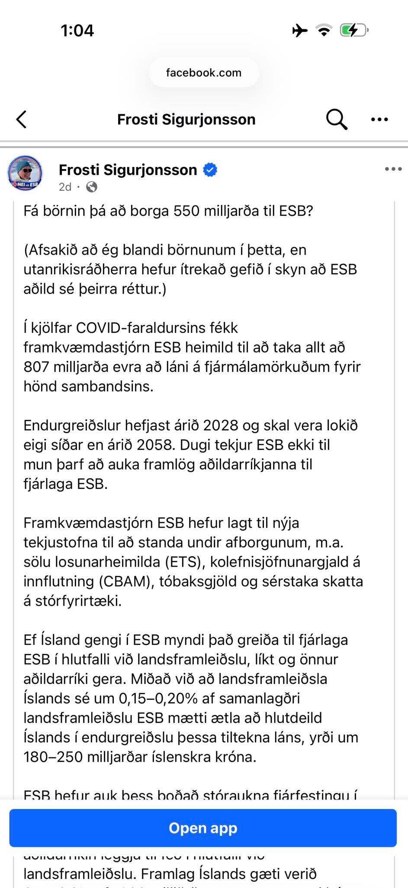

Villandi tölur Nei-sinna í ESB-umræðunni eru ekki tilviljun heldur aðferð. Upplýsingaóreiða. Nýjasta dæmið: fullyrðing um að aðild kostaði Ísland minnst 550 milljarða króna — tala sem stenst ekki fyrstu skoðun á opinberum gögnum sambandsins sem höfundur sjálfur virðist þekkja eitthvað til.

Frosti Sigurjónsson, einn helsti talsmaður andstæðinga ESB-aðildar, heldur því fram að Ísland þyrfti að greiða: um 200 milljarða vegna COVID-lána ESB og um 350 milljarða vegna varnarmála og nýsköpunar, ofan á árleg framlög.
Af hverju að eltast við þetta? Vegna þess að þetta er ekki stök reikniskekkja heldur aðferð. Sömu tækni — að velja tölur til að rugla fremur en upplýsa — höfum við séð í deilum um hve stóran hluta regluverks ESB Ísland hafi þegar tekið upp, í fullyrðingum um að matvörur séu „í raun“ ódýrari hér (sjá tengt efni að neðan), og í ýkjukenndum málflutningi um meint hrun evrópsks efnahags.
Aðferð Frosta er einföld: taka háar tölur úr ólíkum áætlunum ESB, margfalda með áætluðu vægi Íslands í evrópsku hagkerfi og leggja saman. En þannig eru framlög ríkja ekki reiknuð. Ríki fá ekki sendan reikning fyrir hlutfall af hverri stórri tölu sem berst frá Brussel; þau fjármagna árleg fjárlög ESB eftir föstum reglum — vergum þjóðartekjum, virðisaukaskatti, tolltekjum og plastúrgangi.[1] Það eitt fellir forsenduna. Og stóra myndin er þessi: árleg fjárlög ESB nema hvorki meira né minna en um 1 prósenti af þjóðarframleiðslu aðildarlandanna — á hverju ári. Frosti vill hins vegar meina að aðgöngumiðinn einn og sér kosti okkur ríflega 11 prósent af þjóðarframleiðslu. Það er ekki árlegur kostnaður í hans framsetningu heldur eingreiðsla, en samanburðurinn segir samt sína sögu: heil ellefu ár af fullum fjárlagaframlögum, sett fram sem stökk reikningur sem detti inn um lúguna við inngöngu.
Skoðum dæmin
Varnarmálin eru stærsti liðurinn. Frosti segir að ESB hafi boðað 800 milljarða evra til varnarmála, að Ísland greiði sinn hlut eftir stærð hagkerfisins, og að ekki verði tekið lán fyrir þessu. Á opinberri síðu framkvæmdastjórnarinnar stendur nú bara allt annað. Af 800 milljörðunum eru allt að 650 milljarðar sem gert er ráð fyrir að aðildarríkin auki hvert um sig eigin hernaðarútgjöld — Þýskaland til þýska hersins, Frakkland til þess franska. Hinir 150 milljarðarnir eru lán: ESB ætlar að liðka fyrir með því að taka sjálft fé að láni á almennum fjármálamörkuðum, til að fá betri vaxtakjör, og endurlána aðildarríkjunum — aftur til þess að ríkin geti byggt upp eigin heri. En svo borga ríkin lánið til baka.[2] Síðustu fréttir benda sterklega til þess að ekki sé starfræktur íslenskur her. Ef taka á þessa útreikninga Frosta alvarlega hangir á spýtunni sú nýstárlega tillaga að Ísland stofni her. Mér vitanlega hefur það ekki verið krafa ESB.
Sama mynstur sést í COVID-lánunum. Í þeim faraldri liðkaði ESB fyrir fjármögnun aðildarríkja til neyðarráðstafana með stofnun sjóðs upp á 806,9 milljarða evra. Aðildarríkin gátu tekið lán úr þessum sjóði, sem þó var ekki að fullu tæmdur því aðeins 637 milljarðar voru nýttir. Sjóðnum er skipt nokkurn veginn til helminga: annars vegar lán, sem þau ríki sem þau taka endurgreiða sjálf, og hins vegar styrkir.[3] Frosti virðist gera ráð fyrir að Íslandi verði gert að taka þátt í endurgreiðslu beggja. Hvorug forsendan stenst. Lánin eru á ábyrgð þeirra ríkja sem þau tóku — ESB er alþjóðlegt samstarf 27 fullvalda ríkja, og taki aðildarríki lán úr sameiginlegum neyðarsjóði bera skattgreiðendur þess ríkis ábyrgðina, ekki skattgreiðendur annarra. Og styrkirnir voru þegar greiddir út til þeirra ríkja sem fyrir voru, löngu áður en nokkur íslensk aðild kæmi til sögunnar. Ísland fékk ekki krónu af þessu fé. Hvort nýtt ríki taki yfirhöfuð þátt í að þjónusta eldri skuldbindingar sambandsins er samningsatriði í aðildarviðræðum — ekki sjálfvirkur reikningur sem reiknast af hlutfalli í hagkerfinu.
Og loks nýsköpunin. Frosti bætir við 500 milljörðum evra „til nýsköpunar“ sem hann ætlar íslenskum skattgreiðendum að greiða. Eftir því sem ég kemst næst er þetta fullkominn hugarburður, en engar ítarlegar heimildir fylgja þessum reiknikúnstum þannig að maður verður að geta í eyðurnar. Að því er ég best get séð vísar þetta til mats í hinni svokölluðu Draghi-skýrslu á þeirri viðbótarfjárfestingu sem evrópskt hagkerfi þarf árlega til nýsköpunar. Það er fullkomlega óljóst hvað þetta mat hefur með kostnað við aðild Íslands að ESB að gera, enda gerir skýrslan ráð fyrir að fjármagnið eigi að mestu að koma frá einkamarkaði — ekki úr framlögum ríkja í fjárlög ESB.[4] Raunveruleg rannsókna- og samkeppnisútgjöld ESB eru hluti af reglulegum fjárlögum.[5] Raunar passar talan ekki einu sinni við Draghi: þar er matið €750–800 milljarðar á ári, ekki 500, og fjármagnað af einkamarkaði. Talan virðist ekki vera í neinum tengslum við áætlanir ESB, og enn síður aðild Íslands og hvað þá kostnaðarhlið hennar. En hvað veit maður sosum, þegar menn eru að setja fram tölur án þess að geta heimilda.
Fyrir utan þessa dularfullu 500 milljarða er ekkert af þessu falið eða flókið. Þetta stendur í heimildunum hér að neðan. Í ljósi þess að þessar tölur virðast ríma við tilteknar heildartölur virðist Frosta ekki hafa skort heimildir — en hann þurfti vissulega að lesa þær.
Hvort Ísland eigi að ganga í ESB er alvarleg spurning sem verðskuldar málefnalega umræðu. Ef málstaður Nei-sinna er góður, hvers vegna þarf sífellt að styðja hann með tölum sem reynast villandi eða hrein þvæla? Kjósendur í ágúst ættu að spyrja einfaldlega: hvaðan kemur talan, og segir heimildin það sem fullyrt er?
Talan 550 milljarðar er ekki kostnaðaráætlun. Hún er upplýsingaóreiða.
[1] European Commission, „National contributions“ — fjármögnun árlegra fjárlaga ESB (vergar þjóðartekjur, VSK, tolltekjur, plastúrgangur). https://commission.europa.eu/strategy-and-policy/eu-budget/long-term-eu-budget/2021-2027/revenue/own-resources/national-contributions_en ↩
[2] European Commission, „Acting on defence to protect Europeans“ (Future of European defence), uppfært 19. nóvember 2025: „A 1.5% GDP increase in defence budgets could create nearly €650 billion in fiscal space over four years … a €150 billion loan instrument — Security Action for Europe (SAFE) … Funds will be raised on capital markets and disbursed to interested Member States upon demand.“ https://commission.europa.eu/topics/defence/future-european-defence_en ↩
[3] European Commission, „NextGenerationEU“: „the EU expects to raise up to €637 billion by end 2026 … The loans will be repaid by the borrowing Member States. The grants will be repaid by the EU budget“, endurgreiðsla 2028–2058. https://commission.europa.eu/strategy-and-policy/eu-budget/eu-borrower-investor-relations/nextgenerationeu_en ↩
[4] Evrópuþingið, ályktun um Draghi-skýrsluna (A10-0124/2025): „a minimum of EUR 750 to 800 billion in additional annual investment … including through unlocking private capital“. https://www.europarl.europa.eu/doceo/document/A-10-2025-0124_EN.html ↩
[5] European Commission, „The 2028–2034 EU budget for a stronger Europe“, 16. júlí 2025 — rannsóknir og samkeppnishæfni innan reglulegra fjárlaga. https://commission.europa.eu/strategy-and-policy/eu-budget/long-term-eu-budget/eu-budget-2028-2034_en ↩